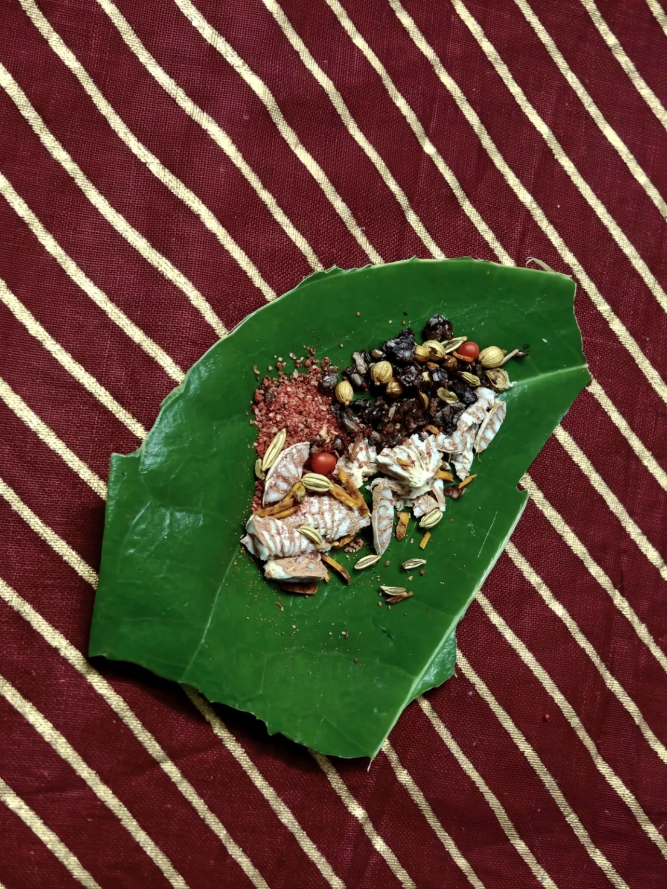

Attar Johara
Smokey Vintage Betelnut
My grandmother has always been a mainstay and supporter in my life, betelnut has been the mainstay in hers.
Using a high quality betelnut extract from Hainan (China) - I devised an attar specifically to represent her.
Her experience through vintage rose, her gentleness through orris and immortelle, and her confidence through warm and animalic materials.
The attar has a great deal of warmth and heritage represented in it using 15% of a deeply barny Bengali oud filled deep with spices and gourmands.
Opening with a near-pungent vintage aroma, it subdues itself to gracefully give room for roses dunk in black tea filled with honey and spent tobacco leaves.
Micro-doses of coffee and pure saffron is a welcomed warmth, stripping away some of the sweetness, this is where the strong-willed confidence starts to show.
A mix of hay and bran with sandalwood help tie in the spices so that it doesn't go into hyperdrive, the restraint works hand in hand with tobacco and cedarwood base to relive it's golden sweetness again.
Attar Johara encapsulates the journey of a strong willed grandmother deeply warm and caring but unafraid of being confidently headstrong.